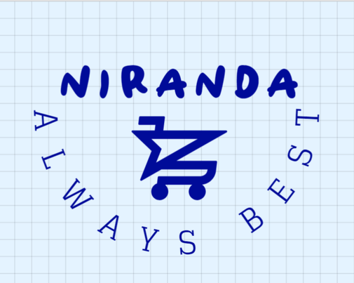

NIRaNDA არის ინოვაციური ონლაინ კომპანია, რომელიც ეძღვნება მომხმარებელსა და შორის უფსკრულის გადალახვას
პროდუქცია ამერიკიდან და ინგლისიდან. მისია, დააკმაყოფილოს სხვადასხვა სავაჭრო საჭიროებები, NIRaNDA
სპეციალიზაცია პროდუქციის ფართო ასორტიმენტის მოპოვებაში და მიწოდებაში, რაც სხვაგვარად შეიძლება იყოს რთული
წვდომა ამ რეგიონების გარეთ

პროდუქტის ყოვლისმომცველი შერჩევა
NIRaNDA ამაყობს ვრცელი კატალოგით, რომელიც მოიცავს:
- მოდა და ტანსაცმელი: დარჩით წინ ტენდენციებზე ტანსაცმლის, ფეხსაცმლისა და აქსესუარების პირდაპირ წყაროს მეშვეობით
ამერიკული და ბრიტანული ბრენდებიდან.
- ელექტრონიკა და გაჯეტები: უახლესი ტექნოლოგიების წვდომა, სმარტფონებიდან სახლის გაჯეტებამდე,
ცნობილია ხარისხითა და ინოვაციებით.
- სილამაზე და პირადი მოვლა: აღმოაჩინეთ სასურველი კანის მოვლის, მაკიაჟისა და მოვლის პროდუქტები -დან
წამყვანი ბრენდები, რომლებიც პრიორიტეტს ანიჭებენ ეფექტურობას და უსაფრთხოებას.
- სახლის საქონელი და დეკორი: აამაღლეთ თქვენი საცხოვრებელი ფართი თანამედროვე ავეჯით, დეკორის აქცენტებით და
ფუნქციური საყოფაცხოვრებო ნივთები.
კარგი შოპინგის გამოცდილება
NIRaNDA პლატფორმაზე ნავიგაცია მარტივია, შექმნილია მომხმარებლისთვის მოსახერხებელი გამოცდილების უზრუნველსაყოფად:
- მარტივი შეკვეთა: განათავსეთ შეკვეთები ძალისხმევის გარეშე, გამარტივებული ინტერფეისის საშუალებით, რომელიც უზრუნველყოფს სიცხადეს და მოხერხებულობას.
- გამჭვირვალე ფასები: მკაფიო ფასების სტრუქტურები და ტრანსპორტირების ხარჯები უზრუნველყოფს გამჭვირვალობას
შესყიდვის მთელი პროცესის განმავლობაში.
- საიმედო მიწოდება: ეფექტური ლოგისტიკური ქსელების გამოყენებით, NIRaNDA უზრუნველყოფს დროულად
მიწოდება თქვენს კარამდე, თქვენი მდებარეობის მიუხედავად.
მომხმარებელზე ორიენტირებული მიდგომა
NIRaNDA-ში მომხმარებლის კმაყოფილება უმნიშვნელოვანესია:
- პერსონალიზებული სერვისი: გამოყოფილი მხარდაჭერის გუნდები ხელმისაწვდომია კითხვების დასახმარებლად,
მორგებული სავაჭრო გამოცდილების უზრუნველყოფა.
- პერსონალიზებული დახმარება: ჩვენ გვაქვს გამოყოფილი სპეციალური ბმული,
შეგიძლიათ შეხვიდეთ მასზე და მიუთითოთ თქვენი პრობლემა. ჩვენ მოვაგვარებთ ამ პრობლემას და მალე დაგიკავშირდებით.
{kind=link}